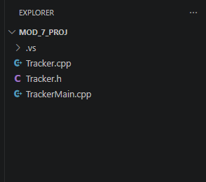
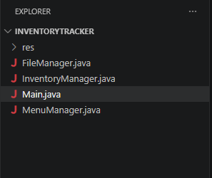
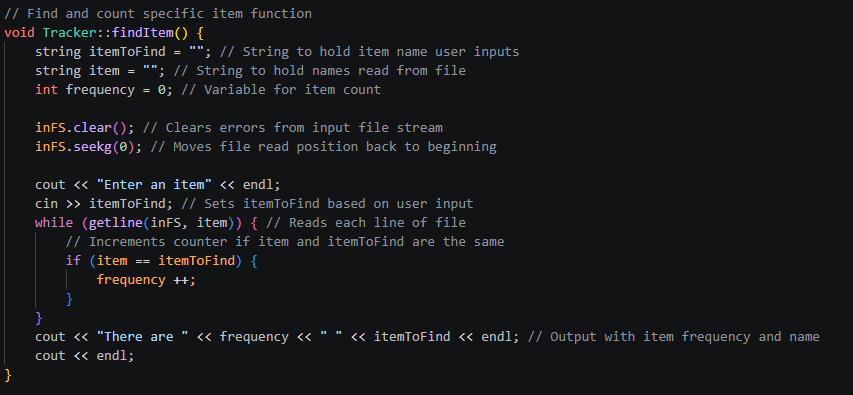
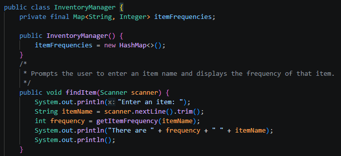

Software Design and Engineering Enhancement
Project Links
Artifact Overview
This artifact is an Inventory Tracker application originally developed in C++. The application is console-based and reads grocery item data from a text file, creates a backup file containing item names and their frequencies, and allows the user to search for specific items, list all items and their quantities, and print a histogram through a menu loop. This program was originally developed as a final project while I was enrolled in CS-210: Programming Languages.
Narrative
I included this artifact in my ePortfolio because it gave me the opportunity to show my ability to review an existing application, identify areas for improvement, and port the existing program functionality into a more structured Java program. One weakness in the original C++ version was that much of the program logic was contained in a single class. The same class handled file management, menu navigation, item searching, frequency listing, and histogram generation. Improving upon this design allowed me to demonstrate my ability to separate application logic into focused classes, including a main application class, a file manager class, a menu manager class, and an inventory manager class. The separation also improved the flexibility of the application because each class has a focused responsibility and communicates with the other classes through clearly defined methods.
Class Structure Comparison
Original

Enhanced

Another weakness in the original application was that several functions repeatedly traversed the input file to complete different tasks. The program read through the file when searching for a specific item, rebuilt frequency data when listing all items, and repeated similar logic when generating the histogram. Improving this weakness in the code base allowed me to demonstrate my ability to use a more efficient data structure by loading the inventory data once and storing item frequencies in a reusable HashMap. This improved the overall structure of the program, reduced repeated file-processing logic, and made the application easier to maintain and expand.
Item Search Method Comparison
Original

findItem() method reset the input stream and traversed the entire
file each time the user searched for an item, counting matches during the search.
Enhanced

findItem() method retrieves the item frequency from inventory data stored
in a reusable HashMap. Because the file data is loaded earlier, the method no longer needs to reopen
or traverse the input file for each search.
The enhancements to this artifact met the course outcome I originally planned to address, which was Course Outcome 2. Course Outcome 2 focuses on creating professional-quality technical work that is coherent, technically sound, and appropriate for its intended audience and purpose. Redesigning the original C++ application as a more modular Java application demonstrated my ability to develop a technically sound software solution with a clear and organized structure. By separating the application into focused classes for file management, menu navigation, and inventory operations, the enhanced version improves readability, maintainability, and overall organization.
The process of enhancing this artifact helped me better understand how important structure and separation of responsibilities are when improving an existing application. One challenge I faced was deciding how to divide the original C++ Tracker class into multiple Java classes without losing the original functionality. I had to design a new class structure and decide which responsibilities belonged in each class. For example, file operations were placed in the FileManager class, menu logic was placed in the MenuManager class, and inventory-related operations were placed in the InventoryManager class. Another challenge was adapting the program from repeatedly reading a file to loading the data once into a HashMap and then reusing that stored data throughout the application. This required adding helper methods to support the new structure, such as adding inventory items into the HashMap, retrieving the frequency of a specific item, and providing access to the stored item frequencies when creating the backup file. This process reinforced that porting a program to a new language and redesigning it around a reusable in-memory data structure requires changes to the overall application design, organization, and logical flow.